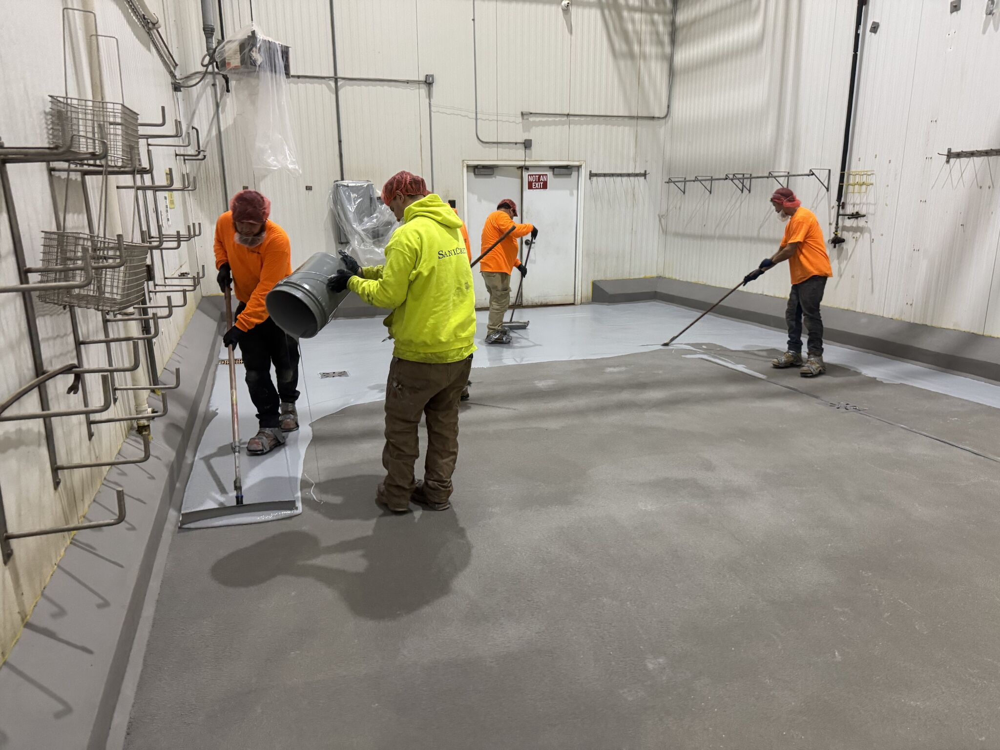
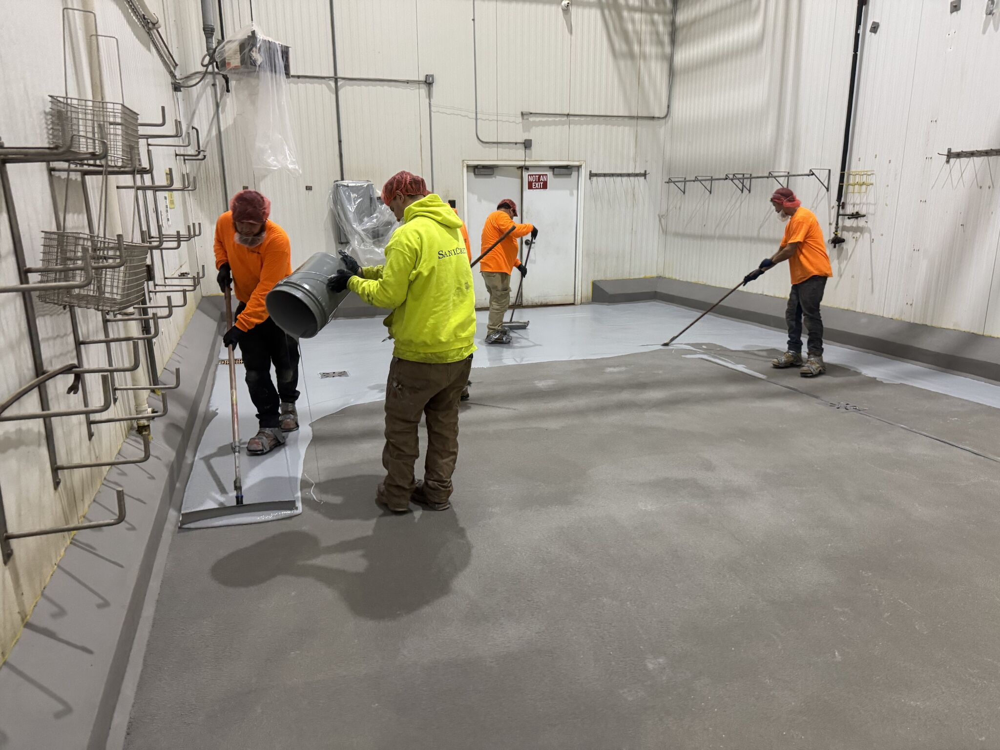
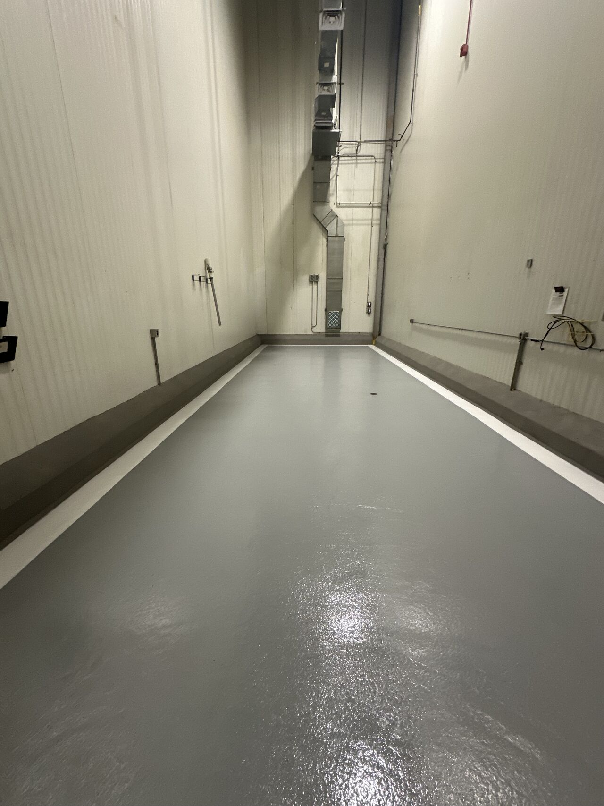
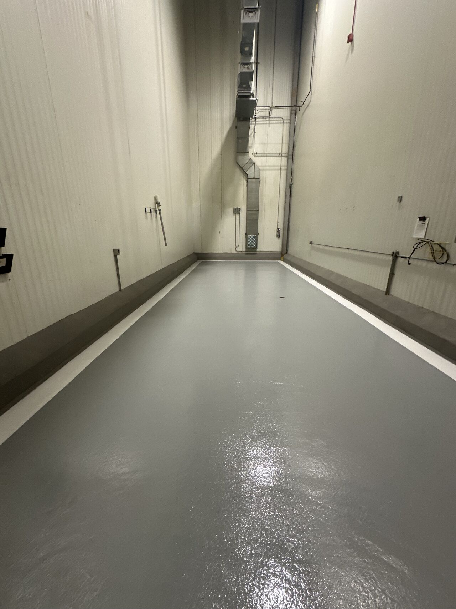
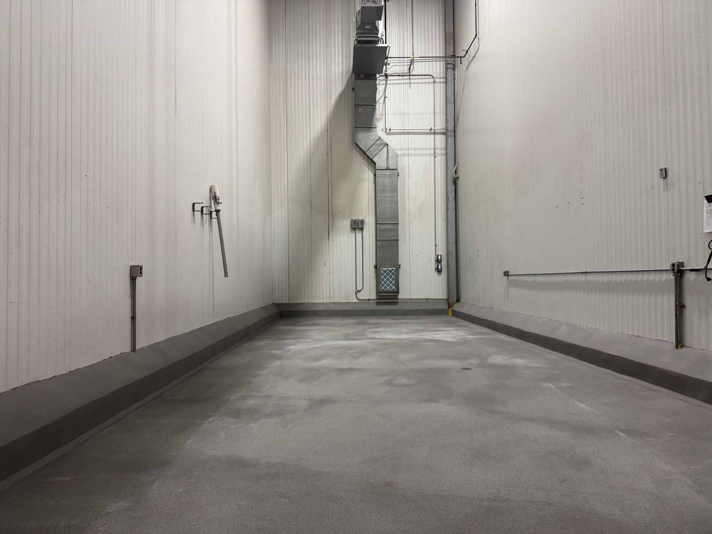
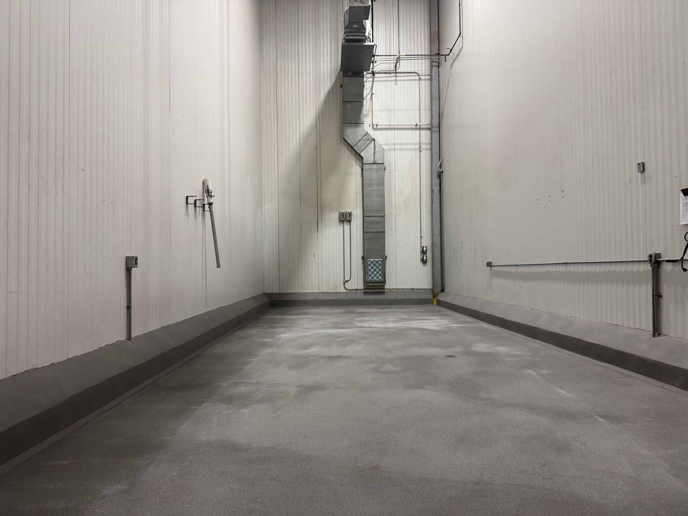

When a food processing facility out east needed their Spice Room and Chemical Room renovated, they used the Thanksgiving shutdown window to get it done. Our crew went in, transformed both rooms from worn-out floors with failing curbing to clean, USDA-compliant surfaces built to handle the toughest conditions in the plant.
Before: Worn Floors, Failing Curbing
Both rooms had dark, worn floors with old yellow curbing that was breaking down. The Spice Room saw constant exposure to spice processing byproducts, while the Chemical Room took daily hits from harsh sanitizers and cleaning chemicals. The existing flooring couldn't keep up.
The Scope
Our crew tackled both rooms during the Thanksgiving shutdown:
Spice Room
- Surface prep — Removed old flooring and profiled the substrate
- SaniCrete STX — 3/8" stainless steel reinforced cementitious urethane
- SaniCrete VR curbing — 2" cant cove for seamless wall-to-floor transition
- SaniCoat topcoat — Final protective seal with white line striping for clean zone delineation
Chemical Room
- Surface prep — Full removal and profiling
- SaniCrete STX — 3/8" stainless steel reinforced cementitious urethane
- SaniCrete VR curbing — 2" cant cove throughout
- SaniCoat 250 CR topcoat — Chemical-resistant topcoat for maximum protection against harsh chemicals
- White line striping — Clean zone delineation
Our Crew at Work
 

Our crews work through holiday shutdowns so our clients can get back to production on schedule. Every member of our team is trained in-house on SaniCrete systems — no subcontractors, no shortcuts.
After: Clean, Compliant, Built to Last
 

 

Both rooms went from worn, failing floors to bright, seamless, USDA-compliant surfaces. The Chemical Room got SaniCoat 250 CR for maximum chemical resistance, and both rooms feature clean white line striping for zone delineation. Back in production on schedule — that's how shutdown season works.
Products Used
- SaniCrete STX — 3/8" stainless steel reinforced cementitious urethane
- SaniCrete VR — Vertical and cove base curbing system
- SaniCoat — Topcoat system (including 250 CR chemical-resistant variant)